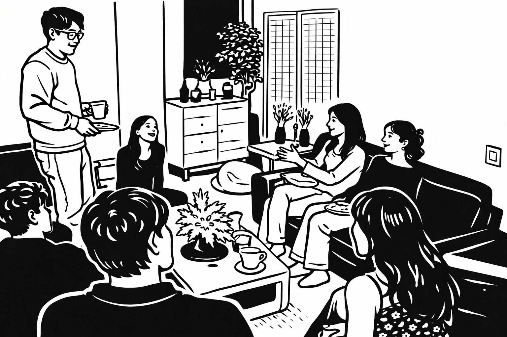

Hi, I'm Aparna :)
I work as a software engineer at a tech company, where I get to spend my days thinking about how systems are built, how they fail, and how they recover.
Outside of software, I'm curious about the systems that govern our daily lives—the incentives, norms, and power structures that shape the outcomes of all our decisions long before we notice them. And I often find myself asking how our institutions are designed, where they fracture, and what it would mean to rebuild them more thoughtfully.
I’ve always loved seminar-style, interdisciplinary discussion—especially at the intersection of technology, finance, policy, ethics, philosophy, and sociology.
The Marginalia Society is an ode to those conversations. It grew out of a desire to create space for deeper thinking, to wrestle with the tension between early ideals and post-graduate realities, and to push back against our shrinking attention spans and increasingly shallow public discourse.
Each month, we bring together about a dozen students and young professionals of different backgrounds in a New York City living room to discuss a handful of shared readings and take a stab at answering one thematic question.
We read closely, think carefully, and engage across disciplines.
And we usually make some new friends along the way :)
